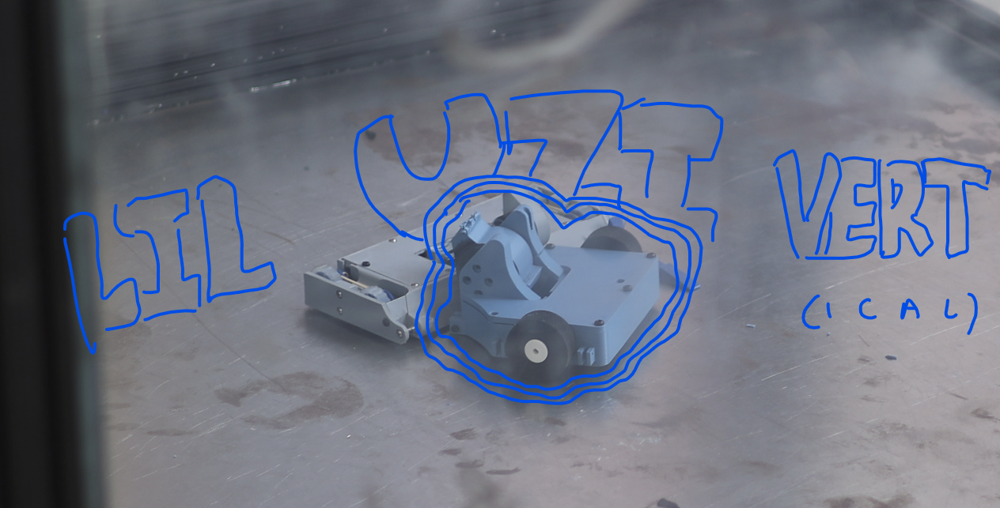

Mechanical Design
Constraint-driven design focused on tight packaging and structural durability under repeated impacts.
Compact vertical spinner designed for impact stability

The robot was designed to minimize knockback and maintain control during impacts. Instead of maximizing size or reach, the footprint was reduced and mass was concentrated toward the center. This allows the robot to stay grounded and re-engage quickly after collisions.
Constraint-driven design focused on tight packaging and structural durability under repeated impacts.
The vertical spinner uses a brushless motor to achieve high rotational speed. Tip speed was estimated using motor KV and battery voltage:
Tip Speed ≈ π × Diameter × RPM
With a 3.2 inch weapon diameter and a 2300 KV motor at 11.1V, the theoretical maximum tip speed is approximately 240 mph. Actual speed is lower due to load and system losses.
A smaller diameter was chosen to improve spin-up time and control, trading maximum energy for responsiveness and consistency in engagements.
The compact design reduced knockback and allowed the robot to remain grounded during impacts, enabling consistent control and a decisive win.
Compact packaging improved stability but reduced accessibility for maintenance. Future iterations would aim to preserve mass distribution while improving serviceability.